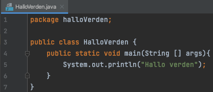
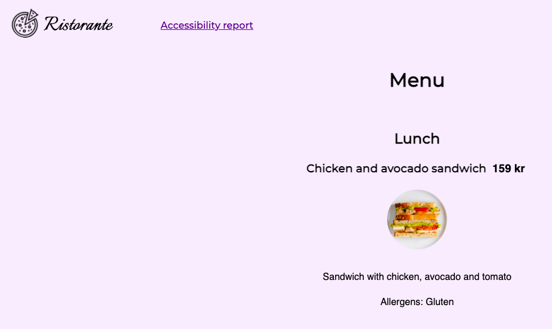

Learning to code
This page is about the challenges our group experienced when we transitioned to university and started learning how to code.
Group member 1s experience
When I finished high school and was about to start university, programming was one of the subjects I most looked forward to. I had a little bit experience with programming from high school, and therefore knew some stuff about what it was all about. Still, there was a lot to learn.

When it comes to programming, I feel both a feeling of mastery and a lot of frustration. Either the code works or nothing happens. This means that you can, for example, sit for a long time only to finally find a small error in the program. When you in the end find the error, you are both relieved and happy. Then I can learn from the mistake, but also get motivation to solve new tasks. Another thing about programming is that I constantly find out how much I dont know, as soon as I learn something new, new questions and problems arise. This means that you have to practice a lot to become good, and to get enough knowledge as you need.
Photo: Benjamin A. Ward, OsloMet
Group member 2s experience
I've always been fascinated by programming from a young age, but it wasn't before the age of 27 that I set out to dive into it. We started programming in html, css and java. I would compare it to learning a language, but where factors other than vocabulary are just as important.

We have had to learn to think at a very "low" level, where we have to make sure that a computer understands what we want it to do. This has been very instructive and certainly something that has changed how we generally think in our everyday lives. We have so far been through the most basic, and are now learning to combine the different parts. We have already done some projects, and I feel that has been most instructive.
Photo: John Hughes/HiOA, OsloMet
Group member 3s experience
I came straight from upper-secondary school to university, and I had never coded anything before at all. The beginning was kind of confusing and difficult, even from the first Hello World program. I didn't understand what anything did, just put the text "Hello World" in and hoped I would understand it soon.
I didn't understand package, class, static, void or even println. After the first few lectures, a lot of my confusion was already cleared, and I accepted that sometimes I would just have to be confused while learning. I still didn't know what a class really was, but I understood that there were other things I needed to know and just had to let the classes be. It was a different type of learning from upper-secondary school because all the responsibility was on myself to learn, and even more different because of the lectures being recordings and over Zoom instead of in person. It was actually nice to have the responsibility on me and to be able to structure my day how I wanted, because it allowed me to work on what I personally needed.
A little later we started with HTML and once again I was confused, but I knew that it would get easier after a few weeks so I didn't stress about it, and the same thing when we started with CSS. The first obligatory assignment I spent way too much time figuring very simple things out, but it turned out to be OK. There are obviously still so many things I haven't learned, but I am excited for it.
